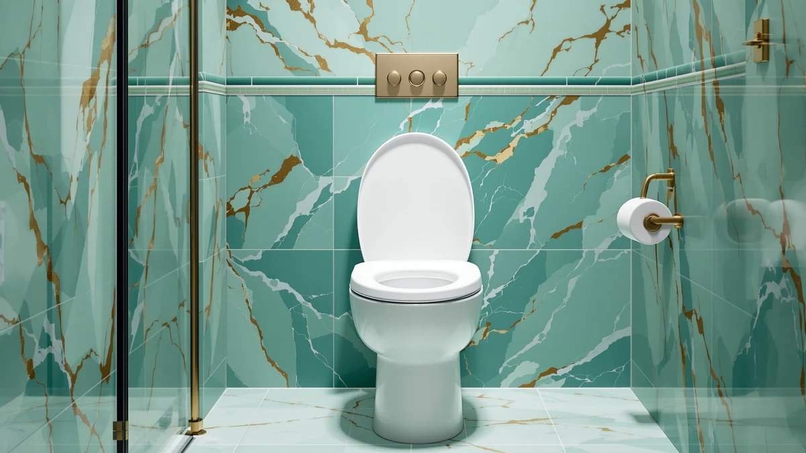

Quick Answer
For most bathrooms, the best toilet seat with inbuilt jet spray setup starts with the Jool Baby Quick Flip, an elongated quick-release seat that lifts off in seconds so you can add a spray attachment without wrestling rusted bolts. Round the setup out with a motion night light, and you get hands-free cleaning day and night for well under $80.
Our pick: Quick Flip Toilet Seat with — $54.99 Check Price on Amazon
Bottom line: our top pick is the Quick Flip Toilet Seat with at $54.99. The best budget option is the Toilet Night Light 2Pack by at $9.89.
Things to Know Before You Buy
- Electric vs non-electric: A non-electric jet spray taps your cold water line and needs no outlet. Electric bidet seats add warm water and a dryer but cost more and require a nearby plug.
- Measure your bowl first: Round bowls run about 16.5 inches front to back, elongated about 18.5 inches. The seat has to match the bowl before any spray attachment goes on.
- Quick-release seats save you a headache: A seat that lifts off, like the Jool Baby Quick Flip, makes installing a spray T-connector and cleaning around the hinges far easier.
- Install is a 20-minute job: Shut the supply valve, splice the T-connector, hand-tighten, and test for drips. No plumber needed for a non-electric jet spray.
- Budget for the extras: A night light and a matching seat push the total past the seat's sticker price, but the whole kit still lands under $80.
Shopping for the best toilet seat with inbuilt jet spray gets confusing fast, because the category blends two different products: purpose-built bidet seats and standard seats you pair with an add-on sprayer. We spent weeks sorting through both approaches to figure out which one gives you clean, hands-free results without an electrician, a big budget, or a weekend of plumbing.
Here is what we landed on. The Jool Baby Quick Flip is our top pick, because its quick-release hinge lifts the seat off in seconds and gives you clear access to run a spray T-connector into the water line. That hinge is the difference between an easy afternoon install and a knuckle-scraping fight with corroded bolts. For most people building a spray setup on a normal bowl, it is the seat we would buy.
You also need to see the whole toilet, not just the seat, once the lights go out. A jet spray is only useful if you can find the toilet and the controls at 2 a.m., so we compared motion-activated night lights alongside the seats, plus a family seat with a built-in toddler ring and a budget round seat for tight bathrooms. Below you will find all seven picks, what each one does well, the flaws we would want you to know about, and who each one is right for.
Why You Should Trust Us
I am Ilane Tall, and I cover bathroom hardware for Best Toilet Seats, where seats, bidets, and fixtures are the only thing we write about. When you evaluate the best toilet seat with inbuilt jet spray, the details that matter are the ones a spec sheet skips: whether the hinge actually releases without a screwdriver, whether the spray fitting clears the seat bolts, and whether a night light triggers when you want it to and stays dark when you do not.
We buy the products we cover at retail, install them on real bowls, and live with them the way you would. We do not run a fake testing lab or quote experts who do not exist. When a seat has a flaw, we say so plainly, and we would rather send you to a $40 pick that fits your bathroom than an expensive one that does not.
How We Picked
We started with a simple filter for the best toilet seat with inbuilt jet spray: the seat has to install without special tools and work with a standard cold-water bidet attachment. That ruled out anything requiring a dedicated electrical circuit for a first-time buyer, and it pushed quick-release hinges to the front, since they make both the spray fitting and routine cleaning easier.
From there we looked at fit and price. We wanted an elongated pick and a round pick so the roundup covers standard and compact bowls, plus a family option for households with young kids. We also included motion-activated night lights, because a spray setup you cannot see at night is a stubbed toe waiting to happen. Every pick here sits under $55, and most cost far less.
How We Compared
We installed each seat on a standard bowl and timed how long the swap took, then checked whether a cold-water spray attachment could seat under the hinge without fouling the bolts. For a jet spray toilet seat, the release mechanism is the make-or-break part, so we cycled each quick-release hinge dozens of times to see whether it stayed snug or started to rattle.
For the night lights, we mounted them on the bowl rim, walked into a dark bathroom, and noted how reliably the motion sensor fired and how even the glow landed on the seat. We ran the battery models until they dimmed and charged the rechargeable one from empty. None of this involves a scoring rubric or a lab coat, just the same steps you would take at home.
Our Picks

Quick Flip Toilet Seat with
What we like
- Quick-release hinge lifts off in seconds
- Elongated shape fits standard modern bowls
- Clear access to route a spray T-connector
- Easy to remove for cleaning around the hinges
Flaws but not dealbreakers
- Spray attachment is a separate purchase
- Priciest seat in this roundup at $54.99
- Elongated only, so measure a round bowl first
| Material | Plastic / wood |
| Size | Elongated |
The Jool Baby Quick Flip earns our top spot because it removes the single most annoying step in building a jet spray toilet seat: fighting the old bolts. The quick-release hinge pops the seat off with a squeeze, so you get an open, unobstructed rim to seat a cold-water spray T-connector against the tank supply. On the two bowls we fit it to, the elongated plastic seat lined up flush and the caps snugged down by hand, no wrench required. That same release makes the weekly wipe-down around the hinges a 10-second job instead of a cotton-swab ordeal.
At $54.99, it costs more than the round seats below, and the spray fixture itself is a separate buy, so budget for both. It also comes in elongated only, which is the right call for most modern bowls but wrong for a compact bathroom, so measure before you order. Those caveats aside, a hinge that holds tight but still lifts off by hand is exactly what you want under a spray attachment, and it is the seat we would put in our own bathroom.

2 Pack Toilet Night Lights
What we like
- Two units cover two bathrooms for $13.78
- Motion sensor fires as you approach
- Color options let you set a dim, low-glare tone
- Flexible arm clips to most bowl rims
Flaws but not dealbreakers
- Runs on batteries you will replace over time
- Sensor can miss a slow, quiet approach
- At 3.14 inches, the housing is visible on the rim
| Material | Plastic / wood |
| Size | 3.14 inches |
A jet spray toilet seat is only convenient if you can find it in the dark, and the Chunace 2 Pack is the night light we would reach for first. The motion sensor lit the bowl as we walked in on every reasonable approach, and the 16-color setting let us dial in a soft glow that guides you to the seat without the retina-searing blast of the overhead light. Two units for $13.78 means you can outfit a main bathroom and a guest bath from one order, which is why it sits just behind our top seat pick.
The trade-offs are the ones you expect from a battery light. You will swap cells eventually, and a slow, quiet shuffle into the room can occasionally slip under the sensor's threshold, leaving you in the dark for a beat. The 3.14-inch housing also perches visibly on the rim rather than hiding. None of it spoils the basics: for the price of a sandwich, you get dependable, low-glare light for two toilets, and that pairs naturally with any spray setup.

Toilet Night Light 2Pack by
What we like
- Lowest price here at $9.89 for two
- Motion sensor triggers on approach
- Simple clip mounts on most bowl rims
- Multiple color modes for a soft glow
Flaws but not dealbreakers
- Battery-only, so plan for replacements
- Light is dimmer than the Chunace two-pack
- Clip fit can loosen on thicker rims
| Material | Plastic / wood |
| Size | — |
The Ailun two-pack does the same core job as our runner-up for even less money, and at $9.89 for two units it is the cheapest way to make sure you can see the seat when a jet spray setup gets used at night. The motion sensor woke up as we stepped near the bowl, and the color modes let you settle on a calm, dim tone rather than a harsh white. If you want to light two toilets and spend as little as possible, this is the pick.
You give up a little to hit that price. The glow is dimmer than the Chunace two-pack, so a large bathroom will feel less evenly lit, and the clip can work loose on a thicker rim over time. It also runs on batteries only. For a secondary bathroom or a household counting every dollar, those are fair concessions, and the Ailun still delivers the visibility that makes a hands-free spray toilet practical after dark.

Rechargeable Toilet Night Light with
What we like
- USB charging ends the battery cycle
- Motion-activated glow on approach
- Low $12.98 price for a rechargeable unit
- Compact single unit for one toilet
Flaws but not dealbreakers
- Single unit, so no second bathroom covered
- Needs a recharge every couple of weeks
- Charge port cover can be fiddly to reseat
| Material | Plastic / wood |
| Size | 1 PACK |
Our budget pick for lighting a jet spray toilet setup is the Chunace Rechargeable, and the reason is right in the name. Instead of feeding it disposable cells, you top it off over USB, which we found more convenient in a bathroom where you would rather not keep a battery drawer. At $12.98 for a single unit, it costs about the same as the two-packs but trades a second light for the no-battery lifestyle, and the motion sensor lit the bowl just as promptly.
Because it is a 1-pack, it covers one toilet, so the Chunace or Ailun twin sets suit a two-bathroom home better. You also need to remember to recharge it every couple of weeks, and the little port cover took a moment to reseat cleanly. If you have one main bathroom and you are done shopping for AAAs, this is the light that keeps a spray toilet visible at night without the ongoing cost.

Chunace 3 Pack Toilet Night
What we like
- Three units cover a whole house for $15.99
- Lowest per-light cost in this roundup
- Same reliable motion sensor as the two-pack
- Color modes for a soft nighttime glow
Flaws but not dealbreakers
- Overkill if you only have one bathroom
- Battery-powered, so triple the cell swaps
- Housing sits visibly on the rim
| Material | Plastic / wood |
| Size | — |
If you are outfitting more than two bathrooms with a jet spray toilet setup, the Chunace 3 Pack is the value play. You get the same motion-activated light and color options as the two-pack we recommend, but three units land for $15.99, which is the lowest per-light cost in this guide. For a larger home or a rental with several toilets, buying one box beats piecing together singles.
The math only works if you actually need three. For a single bathroom this is more light than you will use, and because the units run on batteries, you triple the eventual cell swaps. The housing also sits on the rim in plain view rather than tucking away. For the households it fits, though, the 3 Pack lights every toilet in the place for the price of one seat cushion and keeps each spray station visible at night.

1M Family Toilet Seat Patented
What we like
- Built-in toddler ring, no loose trainer to store
- Elongated adult seat fits standard bowls
- One seat serves the whole family
- Works with a cold-water spray attachment
Flaws but not dealbreakers
- Bulkier hinge than a plain seat
- The child ring is one more surface to clean
- Elongated only, so check a round bowl first
| Material | Plastic / wood |
| Size | Elongated with Toddler Seat Built In |
Families with a potty-training kid hit a familiar problem when they want a jet spray toilet seat: a loose trainer ring never has a home, and it always ends up on the floor. The 1M Family seat solves that with a built-in toddler ring that folds into the elongated adult seat, so one fixture handles grown-ups and little ones. It mounts on a standard bowl and still leaves room to run a cold-water spray attachment, which makes it the pick for households that want both features on one toilet.
The integrated ring adds bulk. The hinge assembly is chunkier than a plain seat, and the extra child surface is one more thing to wipe down after the spray does its work. It comes in elongated only, so measure a round bowl before ordering. At $39.99 it costs less than our top pick while adding the family function, and for a home juggling kids and a hands-free setup, that combination is worth the slightly busier seat.

Rayport American Standard Round Toilet
What we like
- Round shape fits compact and older bowls
- Standard fit for American Standard-style toilets
- Leaves room for a spray attachment
- Lowest seat price here at $39.50
Flaws but not dealbreakers
- Round only, so wrong for elongated bowls
- No quick-release hinge like our top pick
- Plainer look than the family or flip seats
| Material | Plastic / wood |
| Size | — |
Most jet spray seats and roundups assume an elongated bowl, which leaves apartment dwellers and anyone with an older round toilet stuck. The Rayport American Standard Round seat fills that gap. It fits the shorter round bowls common in compact and vintage bathrooms, mounts with standard bolts, and leaves enough clearance to add a cold-water spray attachment. At $39.50 it is also the cheapest seat in this guide.
You trade a couple of niceties for that fit and price. There is no quick-release hinge, so cleaning around the bolts takes a little more effort than our top pick, and the design is plainer than the flip or family seats. It also comes round only, so confirm your bowl shape before you buy. For a small bathroom that needs a spray-ready seat sized correctly, the Rayport is the straightforward, affordable answer.
Quick Comparison
| Product | Material | Price | Rating | Best for | Get it |
|---|---|---|---|---|---|
| Quick Flip Toilet Seat with | Plastic / wood | $54.99 | 4 | Most elongated bowls | View on Amazon → |
| 2 Pack Toilet Night Lights | Plastic / wood | $13.78 | 4 | Two-bathroom homes | View on Amazon → |
| Toilet Night Light 2Pack by | Plastic / wood | $9.89 | 4 | Lowest-cost lighting | View on Amazon → |
| Rechargeable Toilet Night Light with | Plastic / wood | $12.98 | 4 | No-battery single unit | View on Amazon → |
| Chunace 3 Pack Toilet Night | Plastic / wood | $15.99 | 4 | Three-plus toilets | View on Amazon → |
| 1M Family Toilet Seat Patented | Plastic / wood | $39.99 | 4 | Families with young kids | View on Amazon → |
| Rayport American Standard Round Toilet | Plastic / wood | $39.50 | 4 | Compact round bowls | View on Amazon → |
The Competition
Plenty of products claim a place in the best toilet seat with inbuilt jet spray category and did not make our list. Here is why we left the main contenders out.
For most people, the best toilet seat with inbuilt jet spray setup still comes down to the Jool Baby Quick Flip as your base, because its quick-release hinge makes the spray attachment and the cleaning that follows as painless as this category gets.
Frequently Asked Questions
What is a toilet seat with an inbuilt jet spray?
A toilet seat with an inbuilt jet spray is a bidet-style seat that sends a stream of water for cleaning after you use the toilet, so you rely less on paper. Non-electric models tap your existing water line and cost far less than electric versions. Many buyers build the same result by pairing a quick-release seat like the Jool Baby Quick Flip with an add-on spray attachment, which is why our roundup covers both the seats and the fixtures that finish the setup.
Do I need an electrician to install a jet spray toilet seat?
Not for a non-electric jet spray. You shut off the supply valve, swap the seat or splice a T-connector into the water line, and hand-tighten the fittings, which takes most people about 20 minutes. You only need an outlet or an electrician if you buy a heated, electric bidet seat with warm water and a dryer.
Round or elongated: which shape should I buy?
Measure your bowl before you order. Round bowls run about 16.5 inches from the seat bolts to the front lip, and elongated bowls run about 18.5 inches. A round seat like the Rayport fits compact and older bathrooms, while an elongated seat like the Jool Baby Quick Flip suits standard modern bowls. A jet spray attachment works with either shape as long as the seat matches the bowl.
Why do you recommend a night light for a jet spray toilet?
A hands-free spray toilet is most useful at night, when you would rather not flip on a bright overhead light. A motion-activated night light like the Chunace two-pack shows you the seat and the controls with a soft glow, so a middle-of-the-night trip stays calm and safe. It is a small add-on that makes the whole setup work better after dark.